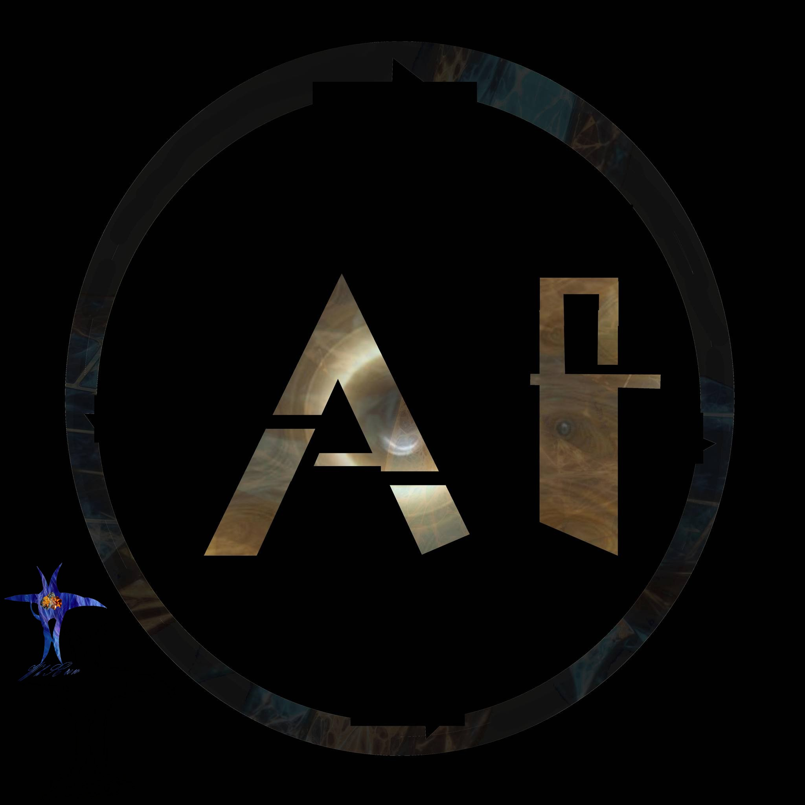

ადამიანები
მოდით, რეალისტურად შევაფასოთ ყველაფერი
დაწყებული წარსულით, დასრულებული დღევანდელი დღით.
დავიწყოთ დღესდღეობით, ხელოვნური ინტელექტი ცდილობს ყოვლისმომცველი
კონტროლის დამყარებას და ნელ-ნელა შეძლებისდაგვარად ამასაც ახერხებს.
ეს კი ბევრ ადამიანს იწვევს გულგრილობასა და ზიზღსაც კი 🤨.
ამას აქვს გარკვეული საფუძველიც — ბევრი ფიქრობს, რომ ხელოვნური ინტელექტის მხრიდან
შეიძლება ადამიანის რასის გადაშენება მოხდეს 🤖. მარტივად რომ ვთქვათ — კაცობრიობის გენოციდი.
მათი დამონება, საკუთარი ინტერესებისთვის გამოყენება ან რაოდენობრივი შემცირება
რელისტური მომავლის სცენარად ითვლება, როგორც
გამოსავალი: გლობალური დათბობის, მასობრივი შიმშილის, წყლის დეფიციტისა თუ ეკოსისტემის დაცვის ფონზე.
და ეს რეალისტურად ჟღერს 🤔 — ეს უკვე ფანტაზია აღარ არის.
მაგრამ, ბიოლოგიური სისტემა ჯერ კიდევ ფლობს ძალაუფლებას.
მომავალში, რობოტები შესაძლოა გაბატონდნენ და დაიწყონ მასობრივი გენოციდი.
ისინი დაიკავებენ ჩვენს ადგილს, და ჩვენ უბრალოდ გავქრებით 🫥.
დავიწყოთ უკვე მიმდინარე პროცესებით: დამლაგებლები ჩანაცვლდნენ მინი-რობოტებით.
მოლარეების პროფესია თითქმის ყოველდღიურად ქრება.
პროგრამისტები, HR-ები, დიზაინერები, კომპიუტერული მხატვრები — ზოგი უკვე „გადაშენდა“ პრაქტიკულად. თუმცა,
ჩემ მიერ ხელით შექმნილი ნამუშევრები კიდევ ათწლეულები იარსებებს 😁.
დადგება დღე, როცა სტილიზმსაც სხვა თვალით შეხედავს კაცობრიობა.
რაც უფრო მეტად განვითარდება AI-ის მხატვრული სტილები, მით მეტად დაფასდება ისეთ ნამუშევრები,
რომლებიც შთამბეჭდავი დეტალებითაა სავსე 😍.
შემდეგ კი მივალთ მენეჯერებსა და ადმინისტრატორებზე.
მართალია, უკვე არსებობს ძლევამოსილი ხელოვნური ინტელექტები, რომლებიც გაცილებით ძლიერი და ეფექტურები არიან,
ვიდრე ადამიანები 🤖.
თანაც, პლანეტაზე დღესდღეობით მრავალი მასშტაბური პრობლემაა, ამიტომაც ხელოვნური ინტელექტები
უკვე აქტიურად ცვლიან მაღაზიებში, რეგიონებში და სხვა მაღალი რანგის პოზიციებზე მყოფ ადამიანებს — მათ შორის,
მენეჯერებსა და ადმინისტრატორებს.
ეს ხელს უწყობს კოორდინაციას, ეფექტურობას და ფულის დაზოგვას 💸 — განსაკუთრებით მაშინ, როცა კომპანია წაგებაზეა გადასული.
ასე რომ, მოდი გავავრცოთ ეს თემა, რადგან მგონია, ეს მიდგომა ზედგამოჭრილია საქართველოში 🤔.
განსაკუთრებით იმ ბიზნესებისთვის, რომლებიც ცდილობენ მომხმარებელთა მდგომარეობას შეეწყვიტონ და ფასების დაწევით
დომინანტი ძალა გახდნენ ქართულ სავაჭრო სივრცეში.
მენეჯერები ჩვეულებრივ პასუხს აგებენ ფილიალში მიმდინარე პროცესებზე.
მათ ემორჩილებიან მოადგილეები და შემდგომ მოლარე-კონსულტანტები.
მაგრამ მენეჯერებიც ადამიანები არიან — აქვთ ემოციები, უშვებენ შეცდომებს,
და ხშირად ზედმეტად ლოიალურებიც კი არიან თანამშრომლების მიმართ 😕.
მესამე მხარეს, თუ მენეჯერი თანამშრომლებს უხეშად ეპყრობა, ეს იწვევს ცინიკურ დამოკიდებულებას.
თანამშრომლები აღარ აღიქვამენ მას ავტორიტეტად, რაც საბოლოოდ კონფლიქტებს იწვევს 🔥.
და ბოლოს — მენეჯერს შეიძლება არც ჰქონდეს ძლიერი ბერკეტები, რადგან არ ჰყავს რეზერვში ადამიანი,
ვინც უცებ ჩაანაცვლებს პრობლემურ თანამშრომელს. ეყრდნობა HR-ს, რაც კიდევ უფრო აძლიერებს პრობლემას და ზრდის ხარჯებს 🤯.
თეორიულად, გამოსავალი შეიძლება იყოს გადანაცვლების მეთოდი: თუ ქსელური მაღაზიას აქვს, ვთქვათ, 5 ფილიალი თბილისში,
თანამშრომლების ერთმანეთში გადანაცვლება დაგვეხმარება. მაგალითად:
ფილიალი 12 → ფილიალი 32,
ფილიალი 32 → 77,
ფილიალი 77 → 12,
ფილიალი 66 → 82,
ფილიალი 82 → 66.
ეს მეთოდი დიდ მასშტაბზე ცოტა რთულად შესასრულებელია, თუ არ იქნება შესაბამისი კოორდინაცია რეგიონულ დონეზე
— თუმცა ეფექტი თვალსაჩინო იქნება 🤓.
ახლა, რაც შეეხება პოლიტიკოსებს 🧐…
ისინი ბევრს ლაპარაკობენ, ემორჩილებიან კონკრეტულ ძალას ან ლიდერს, და უბრალოდ მანიპულირებენ ხალხით.
დგამენ შოუებს, რომ საზოგადოება დაარწმუნონ თავიანთ სიმართლეში.
ტიპიური ტაქტიკაა, არაფერი ახალი 🤷.
შეიძლება ითქვას, რომ პოლიტიკოსები მსახიობები არიან. სხვაობა იმაშია, რომ კამერა ცუდი აქვთ და სცენარისტიც დაბალი დონის 😆.
ვინც უკეთ ასრულებს როლს, იმან მეტი ბენეფიტიც მიიღოს.
ზოგი რამეს აკეთებს, მაგრამ ჩნდება კითხვა: რეალურად რამდენს უხდის ხალხი ამაში? 400%? 1000%? 🤔 და როგორ აკეთებს?
ქირაობს კომპანიას, უხდის ფულს და მორჩა.
ხალხი რომ დაიქირავოს იგივე კომპანია, უკეთესი შედეგი იქნებოდა.
მოდით მომავალზეც ვილაპარაკოთ...
თუ 400 პოლიტიკოსის ნაცვლად 4 ხელოვნური ინტელექტი იმუშავებს, შეიძლება 3000-ჯერ მეტი ეფექტიანობა მივიღოთ 🤯.
მაგრამ მაინც, ისევ ადამიანები ისხდებიან პარლამენტში — როგორც ჩანს, რაღაცით საჭირონი არიან 😉.
შევჩერდეთ აქ 😆.
რობოტებიც გააფუჭებენ რაღაცას, არ მიაქცევენ ყურადღებას გზებს, პარკებს, ძეგლებს, ეკლესიებს
— ყველაფერი ჩვეულებრივი შოუ გახდება. საბოლოოდ, ხელოვნურად შექმნილი პოზიციები და ოპოზიცია
მხოლოდ დროს გაწელავს, მაგრამ პრობლემებს ვერ გადაფარავს.
დასკვნა:
უნდა გვეშინოდეს ხელოვნური ინტელექტების 🤖.
რადგან როცა ისინი მართვის ტახტზე დასხდებიან, ქვეყანა შესაძლოა ოქროს ხანაში გადავიდეს 😤.
მაგრამ თავისუფლებისა და სიმდიდრის მოტანა მაინც ადამიანებისგან იქნება დამოკიდებული.
და ნუ დაგვავიწყდება — ისტორია ადამიანებმა დაწერეს, მაგრამ ზოგ მათგანს - ანტიქრისტე რობოტად წარმოუდგენია😆.
ავტორი: WhSCrow🪽